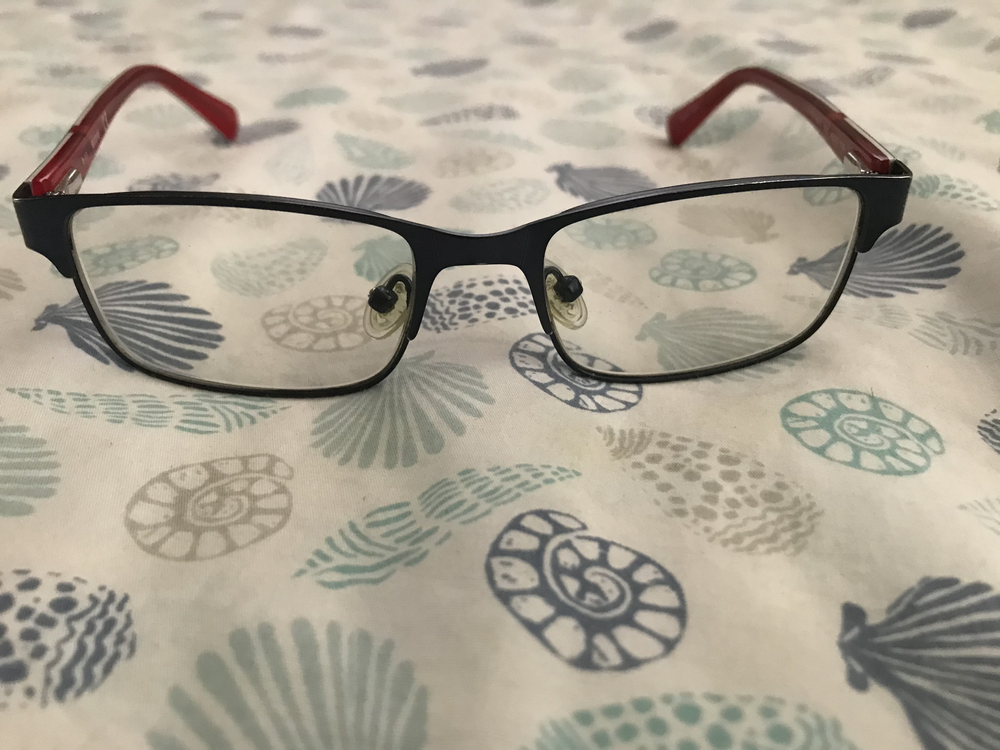
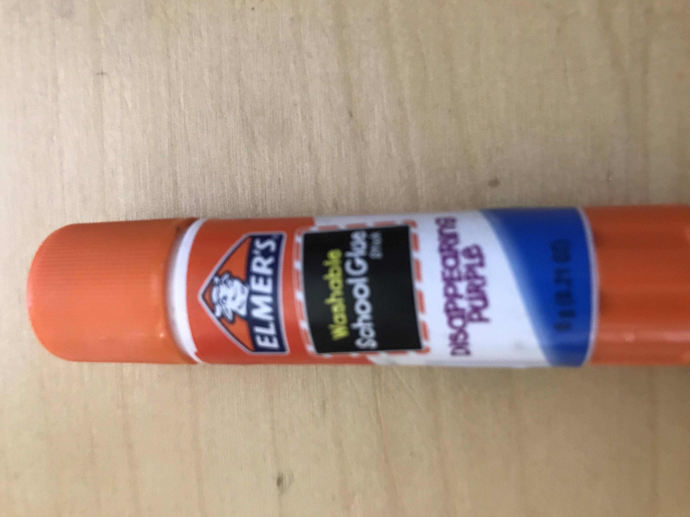
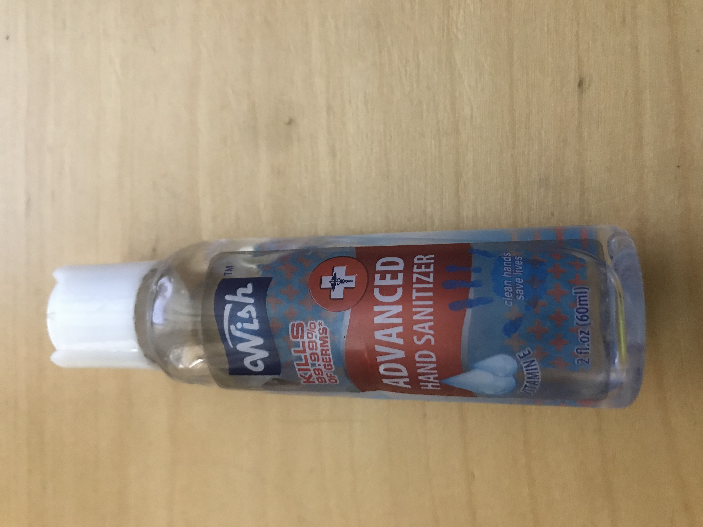
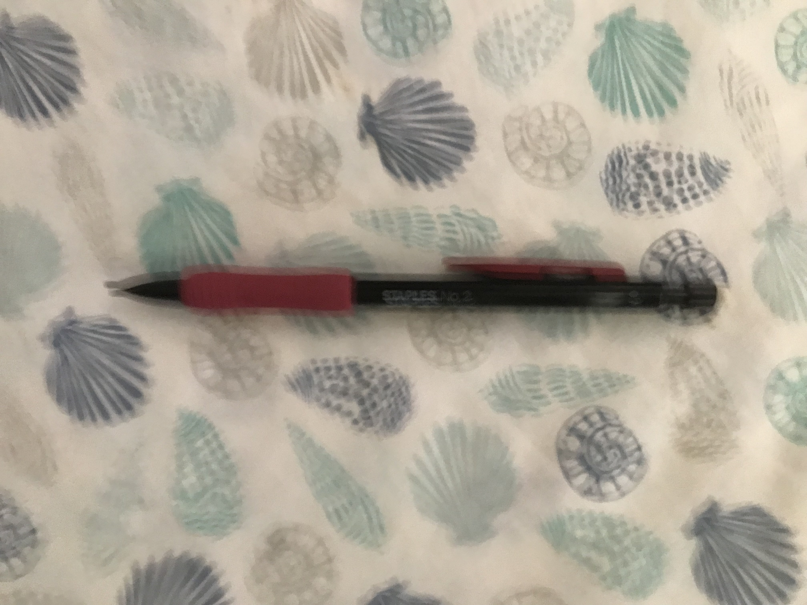

<ol>
    <div class="test_image_and_result col_xs-12">

        <li class="col-sm-4 col-xs-12">
            <b>Test Image - </b>
            
            
            
            
            
            
            
            
            
            
        </li>

        <h5 class="col-sm-4 col-xs-12">
            Output on <b>Google Lens</b> -
            <span> </span>
        </h5>

        <h5 class="col-sm col-xs-12">
            Output on <b>Mobilenet Model </b> -
            <span> </span>
        </h5>

        <div class="mini_result0" class="col-xs-12">
            <h4>Result - </h4>
            <hr>
            <h4>I have tested 10 images.
                Google Lens have predicted 8 of them more accurately. And Mobile Net was less
            accurately.
        So according to my case study Google Lens is more Accurate. </h4>
        </div>

    </div>
</ol>